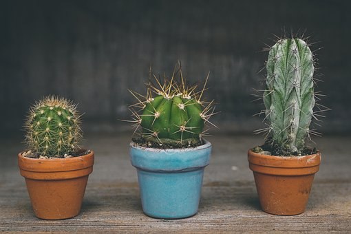

Ubicacion y luz
Es muy importante conocer este aspecto del cultivo. Saber dónde ubicar nuestras plantas desde el momento en que las adquirimos nos puede ahorrar varios problemas como quemaduras, etiolaciones, pudriciones, etc.
Desde ya que los cactus y las suculentas NO SON PLANTAS DE INTERIOR. Lo mejor es encontrar un lugar en exterior.
Ubicacion y luz
Es muy importante conocer este aspecto del cultivo. Saber dónde ubicar nuestras plantas desde el momento en que las adquirimos nos puede ahorrar varios problemas como quemaduras, etiolaciones, pudriciones, etc.
Desde ya que los cactus y las suculentas NO SON PLANTAS DE INTERIOR. Lo mejor es encontrar un lugar en exterior.
Riego
Empecemos por aclarar la falsa premisa de que los cactus se riegan poco. Durante la fase de crecimiento principal, de septiembre a marzo, los cactus necesitan buenos riegos. Lo importante es que el sustrato drene bien el agua y que el sustrato se seque entre riegos. Las raíces no deben sufrir excesos de humedad ni falta de aire.

Para más info anotate al curso
Ir al cursoPágina realizada por Fernando Barron.